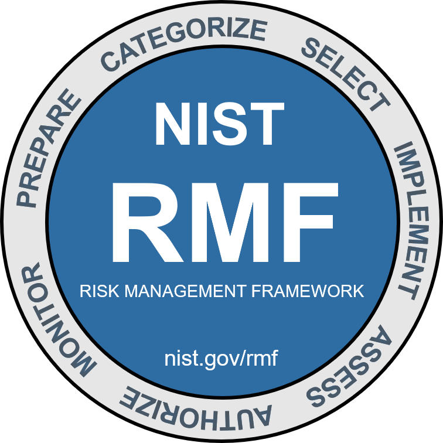

Learning Objectives
- Explain the fundamental principles of risk management in cybersecurity.
- Identify and categorize risks as internal or external threats.
- Perform quantitative and qualitative risk analyses.
- Understand the NIST Risk Management Framework (RMF) and its application.
- Recognize key NIST standards and documentation used in cybersecurity.
Risk Management Practices
Effective risk management begins with identifying, assessing, and mitigating potential threats that could affect organizational assets. Risks can be classified as internal (originating from within the organization, e.g., employee errors or system misconfigurations) or external (originating outside the organization, e.g., cyberattacks, natural disasters).
Once risks are identified, organizations can apply appropriate mitigation strategies, including:
- Risk Avoidance: Eliminating actions or exposures that introduce risk.
- Risk Transference: Shifting the risk to a third party, such as through insurance or outsourcing.
- Risk Acceptance: Acknowledging the risk and choosing to accept it without additional action.
- Risk Reduction: Implementing controls to reduce the likelihood or impact of a risk.
Risk Analysis Methods
Risk analysis allows organizations to quantify and qualify risks for informed decision-making. There are two main methods:
Quantitative Analysis
Quantitative analysis assigns real monetary values to potential damages and countermeasures. Key components include:
- Single Loss Expectancy (SLE): The expected monetary loss from a single occurrence of a threat. Example: a successful malware attack might cost $1,000 per incident.
- Exposure Factor (EF): The percentage of the asset value lost due to the threat. For example, a 50% loss to a $1,000 asset would be $500.
- Annualized Rate of Occurrence (ARO): How often a threat is expected to occur annually. Example: ARO = 2 means twice per year, ARO = 0.25 means once every four years.
- Annual Loss Expectancy (ALE): The expected annual loss calculated as SLE x ARO. Example: If SLE = $1,000 and ARO = 0.25, then ALE = $250.
Qualitative Analysis
Qualitative analysis uses scenarios and subjective judgment rather than precise numeric values. This method focuses on risk ranking and prioritization. Techniques include:
- Scenario Analysis: Considering “what-if” scenarios to evaluate potential impact.
- Risk Matrices: Mapping risks based on likelihood and severity (e.g., high, medium, low).
- Expert Judgment: Leveraging the experience and insight of IT security professionals to assess risk probability and impact.
Qualitative analysis is useful when precise data is unavailable or when assessing emerging threats that lack historical evidence.
NIST and the Risk Management Framework (RMF)
The National Institute of Standards and Technology (NIST) provides a comprehensive set of standards, guidelines, and best practices for managing cybersecurity risk in organizations. NIST publications help organizations secure IT systems, protect sensitive information, and comply with regulations.
The NIST Risk Management Framework (RMF) provides a structured process for managing security and privacy risk. The RMF includes seven key steps:

- Prepare: Essential activities to prepare the organization to manage security and privacy risks.
Purpose: Carry out essential activities to help prepare all levels of the organization to manage its security and privacy risks using the RMF
Outcomes:
- key risk management roles identified
- organizational risk management strategy established, risk tolerance determined
- organization-wide risk assessment
- organization-wide strategy for continuous monitoring developed and implemented
- common controls identified
- Categorize: Categorize the system and information processed, stored, and transmitted based on an impact analysis.
Purpose: Inform organizational risk management processes and tasks by determining the adverse impact with respect to the loss of confidentiality, integrity, and availability of systems and the information processed, stored, and transmitted by those systems
Outcomes:
- system characteristics documented
- security categorization of the system and information completed
- categorization decision reviewed/approved by authorizing official
- Select: Select the set of NIST SP 800-53 controls to protect the system based on risk assessment(s).
Purpose: Select, tailor, and document the controls necessary to protect the system and organization commensurate with risk
Outcomes:
- control baselines selected and tailored
- controls designated as system-specific, hybrid, or common
- controls allocated to specific system components
- system-level continuous monitoring strategy developed
- security and privacy plans that reflect the control selection, designation, and allocation are reviewed and approved
- Implement: Implement the controls and document how controls are deployed.
Purpose: Implement the controls in the security and privacy plans for the system and organization
Outcomes:
- controls specified in security and privacy plans implemented
- security and privacy plans updated to reflect controls as implemented
- Assess: Assess to determine if the controls are in place, operating as intended, and producing the desired results.
Purpose:Determine if the controls are implemented correctly, operating as intended, and producing the desired outcome with respect to meeting the security and privacy requirements for the system and the organization.
Outcomes:
- assessor/assessment team selected
- security and privacy assessment plans developed
- assessment plans are reviewed and approved
- control assessments conducted in accordance with assessment plans
- security and privacy assessment reports developed
- remediation actions to address deficiencies in controls are taken
- security and privacy plans are updated to reflect control implementation changes based on assessments and remediation actions
- plan of action and milestones developed
- Authorize: Senior official makes a risk-based decision to authorize the system (to operate).
Purpose: Provide accountability by requiring a senior official to determine if the security and privacy risk based on the operation of a system or the use of common controls, is acceptable.
Outcomes:
- authorization package (executive summary, system security and privacy plan, assessment report(s), plan of action and milestones)
- risk determination rendered
- risk responses provided
- authorization for the system or common controls is approved or denied
- Monitor: Continuously monitor control implementation and risks to the system.
Purpose: Maintain ongoing situational awareness about the security and privacy posture of the system and organization to support risk management decisions.
Outcomes:
- system and environment of operation monitored in accordance with continuous monitoring strategy
- ongoing assessments of control effectiveness conducted in accordance with continuous monitoring strategy
- output of continuous monitoring activities analyzed and responded to
- process in place to report security and privacy posture to management
- ongoing authorizations conducted using results of continuous monitoring activities
NIST also provides standards and documentation such as:
- SP 800-53: Security and Privacy Controls for Federal Information Systems.
- SP 800-37: Guide for Applying the Risk Management Framework.
- SP 800-30: Guide for Conducting Risk Assessments.
- Cybersecurity Framework (CSF): Core guidelines for managing and reducing cybersecurity risk.
Organizations use these standards to create repeatable, consistent processes for managing cybersecurity risk effectively.